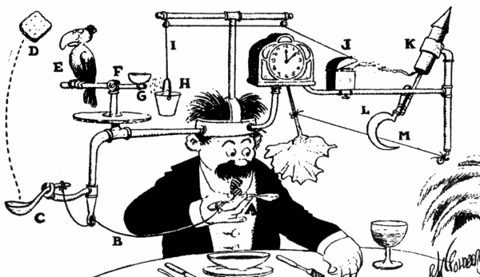
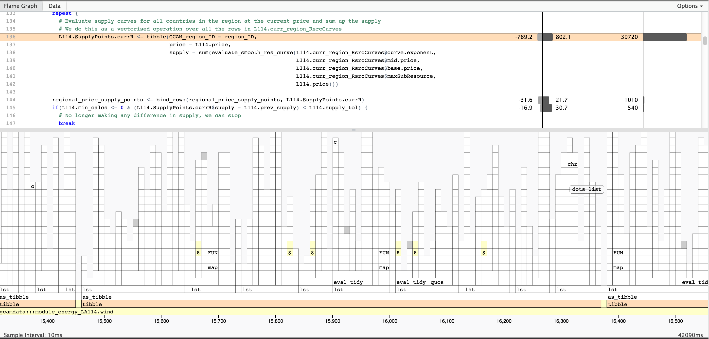

Stop Writing Bad Science Code
Robert Link
19 August, 2017

The Big Pile of Scripts
rm(list = ls())
library('ggplot2')
library('reshape2')
library('ggthemes')
library('dplyr')
srcdir <- dirname(sys.frame(1)$ofile)
source(file.path(srcdir,'food-demand.R'))
source(file.path(srcdir,'food-demand-plots.R'))
source(file.path(srcdir,'mcpar-analysis.R'))
## read the observational data
print('Reading data.')
datadir <- normalizePath(file.path(srcdir, '../../data'))
setwd(datadir)
alldata <- read.csv('food-dmnd-price-allrgn.csv')
## read the mc results: we assume that the data has all been gzipped
setwd('../runs')
mcrslt.all <- read.mc.data('mc-food-dmnd.allrgn.dat.gz')The Big Pile of Scripts
## find the maximum likelihood parameter sets
pv.all <- mcparam.ML(mcrslt.all) # vector for passing to mc.likelihood
p.all <- mc2param(pv.all) # parameter struct for passing to food.dmnd
pp.all <- mcrslt.all[which.max(mcrslt.all$LL),] # data frame for pretty-printing
### plots that require just the observational data
print('Running: obs plots (output = hist.sigma)')
## histogram of sigma values
pltdata <- mutate(alldata, Nonstaples=sqrt(sig2Qn), Staples=sqrt(sig2Qs)) %>%
select(GCAM_region_name, year, Nonstaples, Staples) %>%
melt(id=c('GCAM_region_name', 'year'))
hist.sigma <- ggplot(data=pltdata, aes(x=value)) +
facet_grid(variable ~ .) + geom_histogram(binwidth=0.02) + theme_minimal() +
ggtitle('Imputed sigma values') + xlab('sigma (1000 cal/person/day)')
ggsave('hist-sigma-v23.png') The Big Pile of Scripts (Aftermath)
> ls()
[1] "alldata" "apply.bc.rgn" "apply.bias.corrections" "calc.elas.actual"
[5] "calc.hicks.actual" "calc1eps" "calc1q" "chisq.all"
[9] "chisq.rgn" "chisq.rgn.trn" "chisq.yr" "chisq.yr.trn"
[13] "compute.bc.rgn" "compute.bias.corrections" "datadir" "eta.constant"
[17] "eta.n" "eta.s" "fit.with.err" "food.dmnd"
[21] "food.dmnd.byincome" "food.dmnd.byyear" "hist.sigma" "lamks2epsy0"
[25] "make.byincome.plot" "make.byyear.plot" "make.demand.plot" "make.paper1.mc.plots"
[29] "make.paper1.obs.plots" "make.paper1.param.plots" "mc.chunksize" "mc.eval.fd.likelihood"
[33] "mc.food.dmnd.byyear" "mc.likelihood" "mc.likelihood.1" "mc.logfile"
[37] "mc.make.byyear.plot" "mc.obsdata" "mc.setup" "mc.splitvec"
[41] "mc2param" "mcparam.clip.tails" "mcparam.density" "mcparam.itercount"
[45] "mcparam.ML" "mcparam.sample" "mcrslt.all" "mcrslt.rgn"
[49] "mcrslt.yr" "merge.trn.tst" "namemc" "p.all"
[53] "p.rgn" "p.yr" "paper1.bc.plots" "paper1.chisq"
[57] "paper1.fix.notation" "paper1.gen.residual.data" "paper1.residual.analysis" "paper1.rmse.all"
[61] "path" "plot.elas" "plot.hicks" "plot.qty"
[65] "plts.bc" "plts.mc.all" "plts.mc.rgn" "plts.mc.yr"
[69] "plts.param.all" "Pm.vals" "pmax8" "pmax9"
[73] "pmin8" "pmin9" "Pn.vals" "pnscl"
[77] "pp.all" "pp.rgn" "pp.yr" "prepare.obs"
[81] "process.gcam.data" "Ps.vals" "psscl" "pv.all"
[85] "pv.rgn" "pv.yr" "read.mc.data" "report.param.values"
[89] "resid.stats" "rmse.all" "samp.params" "simplify.region"
[93] "srcdir" "validate.params" "vec2param" "x0"
[97] "x1" "xval.rgn.trn" "xval.rgn.tst" "xval.yr.trn"
[101] "xval.yr.tst" "y.vals"A Good Analysis Script
run_analysis <- function(inputfile) {. . .}
make_plots <- function(results) {. . .}
## Run analysis. Results are a named list with the following elements:
## (. . .)
results <- run_analysis('input-data.csv')
## Make common plots. Plots are returned in a list with the following elements:
## (. . .)
plots <- make_plots(results)Use Your Language’s Package System
- R
- Writing R Packages (http://r-pkgs.had.co.nz/)
- Python
- How To Package Your Python Code
(https://python-packaging.readthedocs.io)
- How To Package Your Python Code
- C++ (and other compiled languages)
- CMake (https://cmake.org) …or…
Use Your Language’s Package System
- R
- Writing R Packages (http://r-pkgs.had.co.nz/)
- Python
- How To Package Your Python Code
(https://python-packaging.readthedocs.io)
- How To Package Your Python Code
- C++ (and other compiled languages)
- CMake (https://cmake.org) …or…
- Why not try Rcpp? (http://www.rcpp.org/)
Refactor Your Code
read_and_clean_data <- function(filename) {. . .}
calc_frobnitz_coef <- function(frobdata) {. . .}
make_sankey_diagram <- function(pltdata) {. . .}Refactor Your Packages
- expt1-data
- my-utilities
- my-analysis
- expt1-paper
Use a Version Control System
Use a Version Control System
…and learn how to use it well

- Git
Pro Git (https://git-scm.com/book) - Mercurial
Hg Init: A Mercurial Tutorial (http://hginit.com)
Develop Good Documentation
#' Calculate the Frobnitz coefficient
#'
#' This version of the Frobnitz calculation follows the treatment in ...
#'
#' There are three possible modes for the calculation. The 'normal' mode ...
#'
#' @param bflux Vector of bogon flux values in counts/m2
#' @param mode String indicating the mode (see details). The default is 'normal'
#' @return Vector of Frobnitz coefficients (unitless)
calc_frob <- function(bflux, mode = 'normal') {
...
}Use a documentation generator:
- R: roxygen2 (http://roxygen.org)
- Python: sphinx (http://www.sphinx-doc.org)
Write a Test Suite
Testing science codes is hard because often you don’t know the correct answer.
#!/usr/bin/env bash
# Run the basic RCPs
$HECTOR input/hector_rcp45.ini
$HECTOR input/hector_rcp85.ini
# Make sure the model handles year changes
sed 's/startDate=1745/startDate=1740/' input/hector_rcp45.ini > input/hector_rcp45_time.ini
$HECTOR input/hector_rcp45_time.ini
# Turn on the constraint settings one by one and run the model
# CO2
sed 's/;Ca_constrain=csv:constraints\/lawdome_co2.csv/Ca_constrain=csv:constraints\/lawdome_co2.csv/' input/hector_rcp45.ini > input/hector_rcp45_co2.ini
$HECTOR input/hector_rcp45_co2.ini- Verify that the code runs in all of its modes.
- Where possible, compare to reference output.
- Generate a set of diagnostic figures.
- Thoroughly test utility functions.
Use a Profiler to Figure Out Why Your Code is Slow

Miscellaneous Tips
- Use a public repository
- GitHub (git only)
- BitBucket (git or mercurial)
- Practice frequent code review
- Critique yourself retrospectively
- Do periodic spring cleaning
- Use good judgement